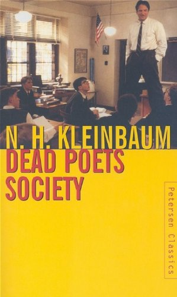

C
A
R
P
E
D
I
E
M
Boys, you must strive
to find your own voice.
Because the longer you wait to begin,
the less likely you are to find it at all.
Thoreau said, "Most men lead lives
of quiet desperation."
Don't be resigned to that.
Break out!
No matter what
anybody tells you,
words and ideas
can change the world.
Why do I stand up here? Anybody?
To feel taller!
No!
Thank you for playing, Mr. Dalton.
I stand upon my desk to remind myself
that we must constantly look at things
in a different way.
Carpe diem.
Seize the day, boys.
Make your lives extraordinary.
O Captain, my Captain.
Who knows where that comes from?
Anybody? Not a clue?
It's from a poem by Walt Whitman
about Mr. Abraham Lincoln.
Now in this class you can either call me Mr. Keating,
or if you're slightly more daring,
O Captain my Captain.
After reading 'Dead Poets Society,' I'm feeling incredibly inspired. John Keating's words and his unconventional teaching style have made me want to live life more fully, just as he says in 'Carpe Diem.' I'm now motivated to be more independent and true to myself, and I am eager to explore the depths of literature, to learn not just for the sake of academics, but to truly live and appreciate the beauty of language and the power of independent thought. 'Dead Poets Society' has gifted me with a renewed sense of purpose, and I hope to carry John Keating's legacy and personal growth with me throughout my college experience and beyond
